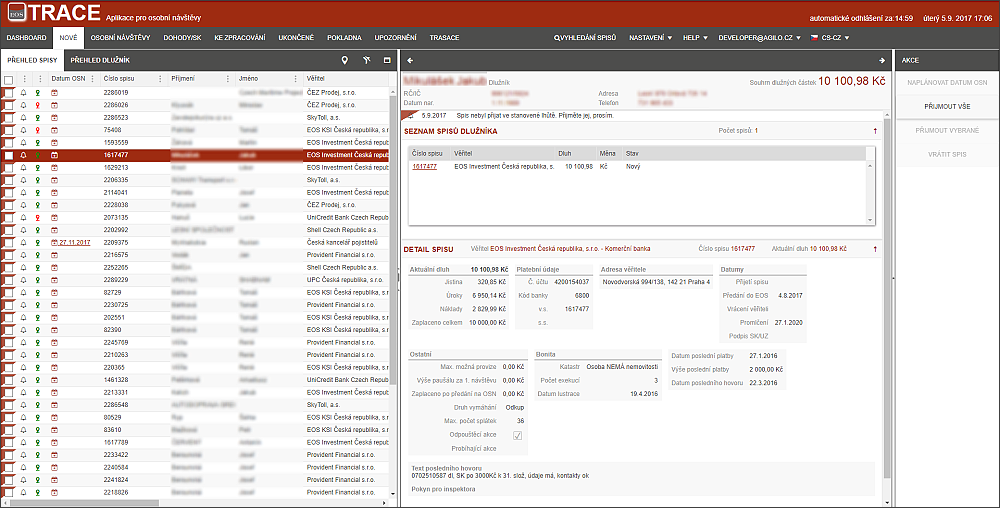

Záložka nové
Na této záložce jsou vždy zobrazeny spisy, které centrála předala Inspektorovi (dále jen IP, nebo uživatel) na zpracování. Cílem této obrazovky je ihned na jednom místě vidět nové spisy, které inspektor ještě nepřebral.

Spis ve stavu Nový je takový spis, který je předaný do portfolia příslušného inspektora, ale ten jej ještě nepřijal. Spis je tedy ve stavu, kdy se inspektor seznamuje s detaily před jeho přijetím. Přijmutím spisu potvrzuje IP převzetí případu do své správy. Přijmout spisy musí IP v co nejkratším čase, předpokládaný termín je maximálně 2 dny. Při nedodržení termínu bude vytvořena URGENCE, která IP upozorňuje na nutnost dořešení spisu.
Inspektor na této záložce spisy překontroluje. Hlavní informací ke spisu jsou tři podzáložky - Detail spisu, Seznam spisů dlužníka a Došlé platby/Dohody o úhradě. Na této záložce může IP u každého spisu naplánovat Datum osobní návštěvy, ověří GPS adresy a spis přijme do svého portfolia.
Inspektor má možnost spis vrátit na centrálu z důvodu, že požaduje opravu spisu, nebo mu spis nepřísluší apod. To se děje i v případech, kdy nelze z vážných důvodů vykonat OSN.